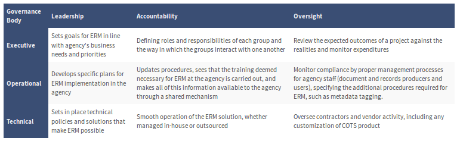

pkb contents
> data management | just under 191 words | updated 05/23/2017
-
Governance
-
Data movement
-
Storage
-
Databases
-
Data warehouses
-
Data lakes
-
Preservation
-
Curation
Per Archives.gov (2016), there are two aspects to governance:
(1)
specifying the structure of accountability ("boundaries, authorities, responsibilities, and tasks") and
(2)
measuring performance. The governance structure should be as simple and stable as possible, and may include:
-
Memoranda of Understanding between units
-
Project- or entity-specific charters
-
Statutes, administrative directives and policies
Many
project management practices and artifacts
contribute to governance:
-
Project proposal
(strategic level):
-
Lays out the business case, explaining how a project aligns with strategy;
-
Sets the scope of the project;
-
Identifies applicable policies, regulations, etc.;
-
Operational level:
-
Communications plan keeps stakeholders informed;
-
Work breakdown structure keeps projects on deadline and in budget;
-
Business process analysis determines how system will interface with operations;
-
Requirements determination ensures the system is aligned with operations and needs;
-
Technical level
(system-specific)

Archives.gov. (2016, August 15). Guidance for building an effective enterprise-wide Electronic Records Management (ERM) governance. Retrieved from
https://www.archives.gov/records-mgmt/policy/governance-guidance.html